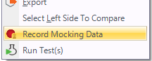
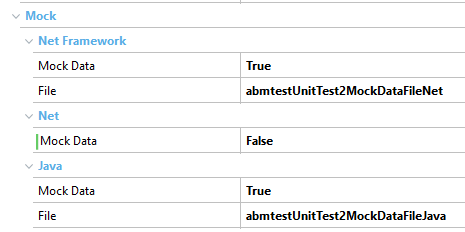

Having proper data in place can be very hard when testing applications. Not only do you need different data sets to test different scenarios and equivalent classes, but also provide combinations that can be fundamental to catch bugs before they go to the production environment.
Additionally, GeneXus applications are commonly data-intensive apps, which means that your tests will not only need a combination of data input but some data configured in your database to let tests run properly.
Database Mocking is a technique that allows you to set the desired database state (for different tables) in your tests to let specific data sets ready for future test execution. Using this technique, you can focus on getting the test data-sets ready once (in a real database), and then use it on different test phases regarding the environments by using mocking. In other words, Database Mocking is a simulation of a database with few records.
Mocking works by recording data (SQLs / results) used for a test by listening for all sentences and responses during the recording stage. That information is stored (as mocking data) and will be used in all future executions of the test in different environments. During the recording, the queries are stored in order (order is relevant) so it is expected that the test will run the queries in the same order that was recorded. Consequently, if over time the tests navigation changes or queries are different, mocking data will need to be recorded again.
In case during test execution, the tests need some data that was not recorded during the recording stage, that query will use real database data sources to get the answer.
To start the recording stage just right-click over a Unit Test and select the option "Record Mocking Data".

This will run the test you've selected using your current data sources/databases. So, ensure you have the database in the required state so your recording can be checked into GeneXus server and add value to your team.
Finally, once the test ends, mocking data will be stored in a KB file object associated with the test using its name. Thus, after having associated mocking data on a test, every time it runs it will use that previously recorded data without using the database.
There are some properties in the unit tests where the mock information is stored. There is a boolean property for each generator that indicates if the test should be mocked and if this property is set to true, the KB object file containing the mock information.

Additionally, each mock file object is set to be extracted to its appropriate target environment.
In case you have dynamic data for your sentences, let's say, an auto number PK or a Date Time, for example, you may need to modify the recorded mock data so it works every time. To allow this you need to modify the type of matching by setting the field KeyPattern.
See an example in this article
Once you have your objects, tests, and mock data ready, you can commit these objects to GeneXus server and tests won't depend on the state of the database used by other developers and, more importantly, its success won't depend on the different environments used by your continuous integration pipeline either. If your test is successful in your local environment it will work the same in any other environment (as long as the version of the objects is the same of course).
See a showcase in this article.
In case you have a file set for a test but no mock data is loaded, check that the File object is set to be extracted for the current generator.